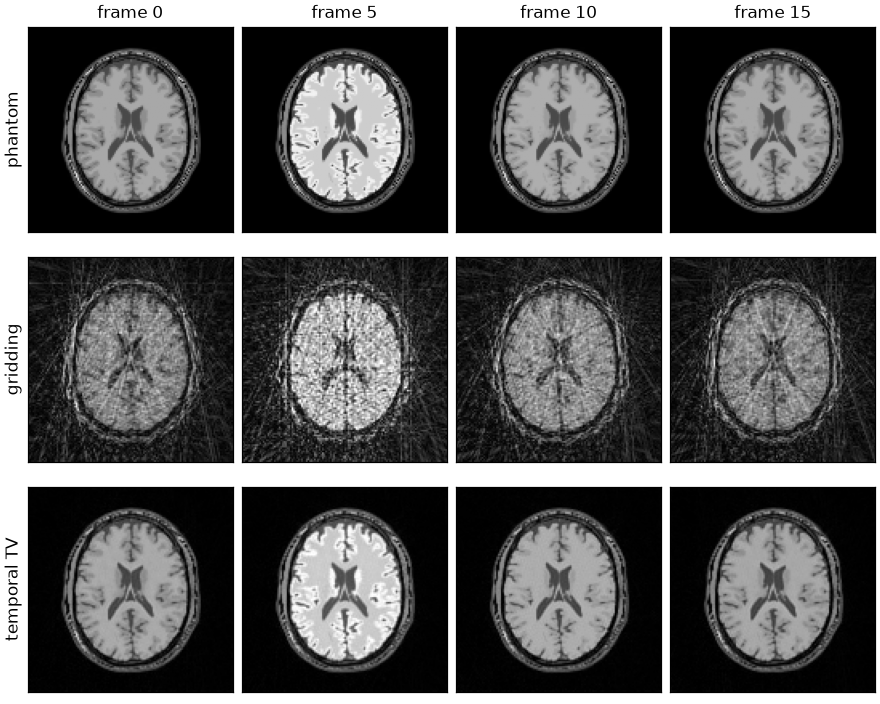
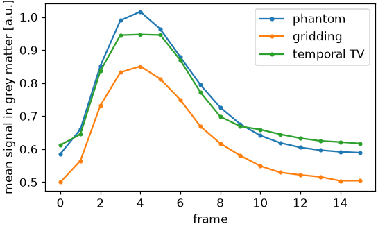

Note
Go to the end to download the full example code.
Dynamic golden-angle radial MRI#
A continuously acquired golden-angle radial scan reconstructed as a time series, with a temporal regularizer compensating for the undersampling of each frame.
The acquisition is one uninterrupted train of spokes, each rotated from the last by the golden angle [1]. Frames are cut out of it afterwards: any block of consecutive spokes covers k-space approximately uniformly, so the frame duration is a reconstruction parameter rather than an acquisition parameter. Thirteen spokes across a 128 matrix is fifteenfold undersampled, and no frame is invertible on its own; the series is recoverable because the frames are not independent, which a total variation penalty along time states.
This is the encoding of Radial SENSE reconstruction with one
axis added: the image is (frames, y, x), the trajectory indexes frames as
well as shots, and the sensitivities are shared across all of them.
The phantom and the coil sensitivities are built as in From k-space to image; the cell that does it is hidden on this page and present in the script this page can be downloaded as.
import csv
from pathlib import Path
import brainweb_dl
import numpy as np
import torch
from brainweb_dl import get_mri
import bartorch
import bartorch.tools as bt
from bartorch import linop, optim, priors
SIZE = 128
COILS = 8
FRAMES = 16
SPOKES = 13 # per frame
A contrast-enhanced series#
The phantom is the BrainWeb segmentation again, with a bolus passing through it: a gamma-variate enhancement curve applied to each tissue class in proportion to its vascularity, strongest in grey matter, weaker in white matter and absent in cerebrospinal fluid. The series is therefore piecewise smooth in time with a spatial structure that is the same in every frame, which is the structure the temporal penalty uses.
CLASSES = {"grey matter": ("GM", 0.8), "white matter": ("WM", 0.25)}
Acquisition#
FRAMES * SPOKES spokes are generated as one golden-angle trajectory and
then reshaped, so that the first axis indexes frames and the second the shots
within a frame. The image varies along the frame axis, so each frame has its
own non-uniform FFT and normal kernel inside the one operator, applied under
the same coil loop.
trajectory = bt.traj(readout=SIZE, spokes=FRAMES * SPOKES, radial=True, golden=True)
trajectory = trajectory.reshape(FRAMES, SPOKES, SIZE, 3)
A = linop.NoncartesianSense(sensitivities, (FRAMES, SIZE, SIZE), traj=trajectory)
measured = bt.noise(A(series), n=1e-6, s=3)
print(f"{A.ishape} -> {A.oshape}")
print(A.plan)
(16, 128, 128) -> (8, 16, 13, 128)
Plan(transform=nufft, items=16, image=sensitivities, normal=kernel, coil_batch=1, streamed=coils, executor=slab)
plan.items is the number of frames the encoding carries, each with its
own transform.
Reconstruction#
Two reconstructions of the same data. The first treats the frames as independent: the adjoint of the encoding applied to density-compensated samples, which is the gridding reconstruction of thirteen spokes per frame. The second solves the whole series at once under a total variation penalty along the frame axis, which states that the signal is constant in time except at a few instants – the reconstruction GRASP performs [2].
weights = torch.linalg.norm(trajectory.real[..., :2], dim=-1).clamp(min=0.25)
gridded = A.H(measured * weights.to(torch.complex64))
data = measured / optim.data_scaling(measured[..., None], A=A)
temporal = optim.ADMM(priors.TotalVariation(axes=(-3,), weight=0.02), maxiter=30)(data, A)
The frame axis is -3, the axis in front of the two spatial ones; a term
given (-1, -2) instead would penalize the spatial gradient, and one given
all three penalizes both. Which axes a term acts on is the whole difference
between a spatial and a temporal regularizer.

The quantity a perfusion study reports is the signal in a region as a function of time, so the reconstructions are compared on that curve. The region here is the grey matter, where the enhancement was applied.
region = memberships[CLASS["GM"]] > 0.6
curves = {
"phantom": series.abs(),
"gridding": scaled(gridded, series),
"temporal TV": scaled(temporal, series),
}
truth = curves["phantom"][:, region].mean(-1)
for name, volume in curves.items():
if name == "phantom":
continue
enhancement = volume[:, region].mean(-1)
curve = float((enhancement - truth).norm() / truth.norm())
frames = bt.nrmse(series.abs(), volume, scaled=True)
print(f"{name:>12} curve NRMSE {curve:.3f} frame NRMSE {frames:.3f}")
gridding curve NRMSE 0.150 frame NRMSE 0.403
temporal TV curve NRMSE 0.039 frame NRMSE 0.068

Gridding recovers the shape of the enhancement curve, since the streaks of a radial acquisition are spread over the image rather than concentrated where the signal is, but carries the frame-to-frame variation of the streak pattern into it. The regularized reconstruction is smoother in time by construction, which reduces noise and also biases the curve: a change confined to one frame is attenuated by a temporal total variation penalty more than any other.
References#
Total running time of the script: (0 minutes 11.121 seconds)